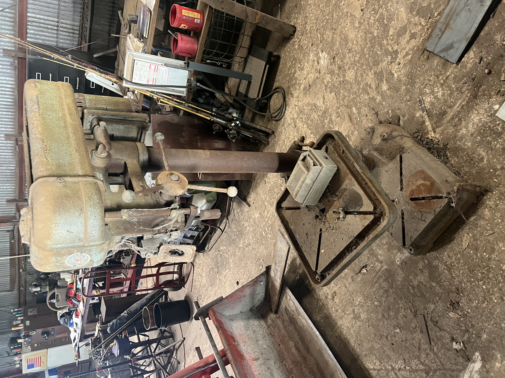

Rockwell Delta 70-400
I purchased a Rockwell Delta 20" drill press in very rough condition (pictured adjacent). The press weighs approx. 500 lbs and was previously toppled over causing extensive damage to the motor and tensioner mechanism, as well as the table lift rack and pinion. I bought the drill press for scrap price and salvaged the intact worm gear from table lift to repair my Clausing 22S drill press.